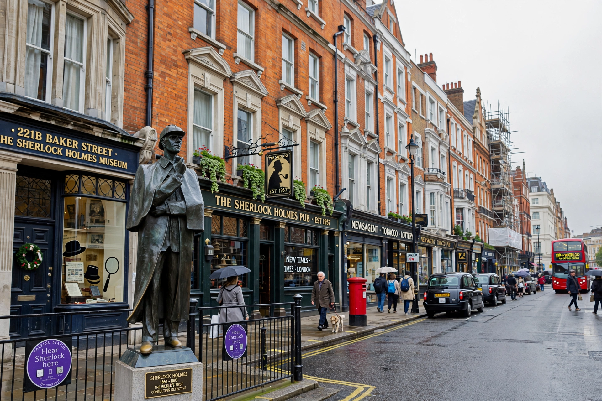

| Baker Street | |
|---|---|
 Baker Street, Marylebone | |
| Location | City of Westminster, London, England |
| Named after | William Baker, builder |
| Known for | 221B Baker Street, home of Sherlock Holmes |
Baker Street is a street in the Marylebone district of the City of Westminster, London. It forms part of the A41 road, running from Regent's Park in the north to Oxford Street in the south. The street was laid out in the 18th century by the builder William Baker, after whom it is named.
Baker Street is best known as the fictional home of Arthur Conan Doyle's detective Sherlock Holmes and Dr John Watson, who lodged at 221B Baker Street in stories published from 1887. When the stories were written, house numbers on Baker Street did not reach 221; the address was later assigned, amid some dispute, to the building housing the Sherlock Holmes Museum, which displays a recreated Victorian study and receives letters addressed to the detective. A statue of Holmes stands near Baker Street station.
Baker Street station, opened in 1863, is one of the original stations of the Metropolitan Railway, the world's first underground railway. The Beatles' Apple Boutique stood at 94 Baker Street in 1967–68. The street gave its name to "Baker Street", the 1978 hit song by Gerry Rafferty famous for its saxophone solo by Raphael Ravenscroft, and to the "Baker Street Irregulars", the street children who assist Holmes in the stories as well as a society of Holmes enthusiasts.
Categories: Streets in the City of Westminster · Sherlock Holmes